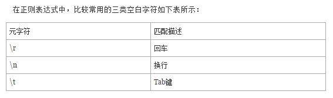
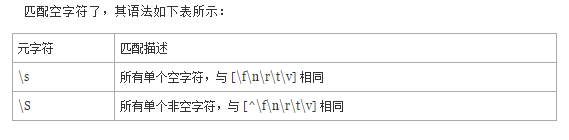

我想先介绍一下回车换行的由来。通常，当我们在键盘上敲击一下回车键时，不管光标此时在哪里，总是会新起一行，然后将光标位于新行的首位置。这在计算机上看起来一气呵成，用一个符号来表示就 OK 了，可在正则表达式中，以及很多语言中(比如 VBScript)，却被表示成了两个动作，一个叫“回车”(Carriage Return)，一个叫“换行”(Line Feed)，在语言，比如 VBScript中，就表示成了：Chr(13)&Chr(10)。这与打印机的工作原理有关，大家知道，打印机先于计算机键盘很多年，是键盘的雏形，在打印机上换行时，将进行两个动作：1、将打印头换到下一行；2、将打印头返回到新行的行首位置。也就分别对应了现在的“换行”和“回车”。

这种情况使得书写表达式时，变得稍有不便，例如，如果我们想匹配一个换行的效果，我们需要将表达式写成“\r\n”。然后，我们在 IE 和 Firefox 中用 javascript 分别做个测试，却发现对于 IE6(NOTE：IE7 我没有试过)来说“\r\n”可以匹配一个换行，而在 Firefox 中，只用一个“\n”就可以了，使用“\r\n”则无法匹配。

比如我们把包含nowamagic的字符串替换掉。
www.nowamagic1.net
www.nowamagic2.com
www.nowamagic3.org